Grafana Guide: Add a Data Source
|
This content was generated with the assistance of AI and should be verified against the official documentation before being relied on in production. |
Checked on 2026-11-11 against Grafana 13.3.x.
What you build
You add five data sources of your own, each prefixed guide-: guide-prometheus for metrics, guide-loki for logs, guide-tempo
for traces, guide-postgres for the Bookshelf database and guide-testdata for generated sample data. You test every
connection with Save & test, and you link logs to traces by giving guide-loki a derived field that opens the trace of a
log line in guide-tempo. The later guides query these data sources, and the provisioned ones stay untouched.
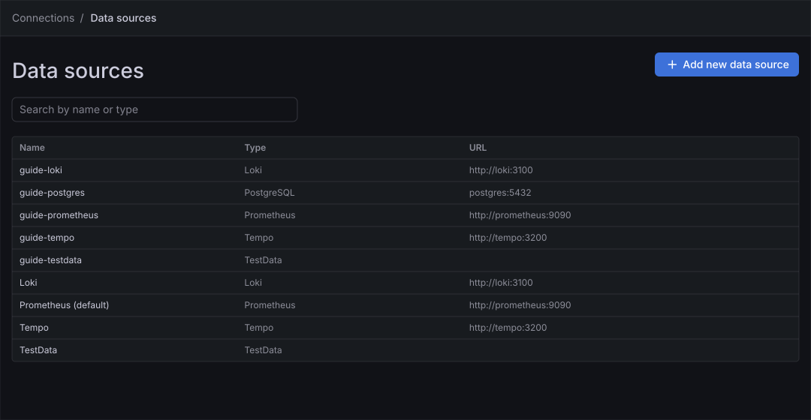
Before you start
-
Start the Grafana profile of the hands-on lab and wait about a minute:
cd lab docker compose --profile grafana up -d -
Open http://localhost:3000, sign in as
adminwith the passwordadmin, and click Skip when Grafana 13.3 asks you to update the default password. -
Do the previous guide, First steps in Grafana, or at least know how to sign in and use the left navigation.
-
The lab provisions four data sources, Prometheus (the default), Loki, Tempo and TestData. They are read-only in the interface. The lab does not provision a PostgreSQL data source, which is why this guide adds it by hand with the connection values of the lab database.
-
The connection URLs use the host names of the lab network (
prometheus,loki,tempo,postgres), because Grafana runs inside it.localhostwould point at the Grafana container itself. -
The guide was checked on Grafana Enterprise 13.3.0 (the free image, no licence key). Adding data sources needs the Admin role of the organization;
adminhas it. -
The figures are drawings of the Grafana 13.3 user interface, not screenshots, so small details can differ from your screen. A highlighted box with a number marks the control of the step with the same number.
Steps
Grafana 13.3 creates a data source at once when you click its type card, with a placeholder name such as prometheus-1, and the settings page has no Name field any more.
You rename the data source with the pencil next to its title.
Open the data sources page
-
In the left navigation, click Connections.
-
Click Data sources. The list shows Loki, Prometheus (marked as the default), Tempo and TestData.
-
Click Add new data source. The entry Add new connection of the same group opens the plugin catalogue, which needs internet access; do not use it here.
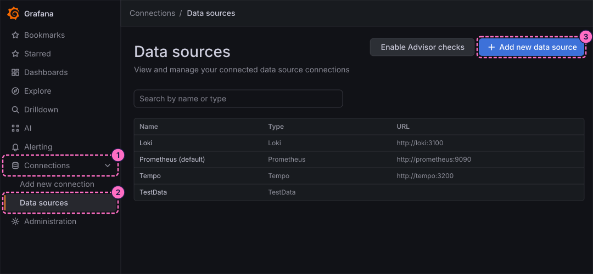
Add Prometheus
-
On the page Add data source, click the card Prometheus. Grafana creates the data source and opens its settings page under the name
prometheus-1.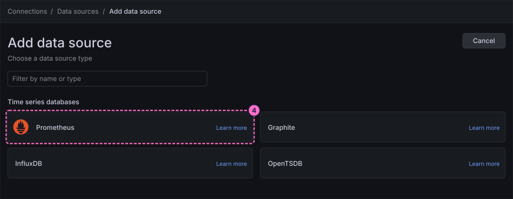
-
Click the pencil (Edit title) next to the title, replace the name with
guide-prometheusand confirm it.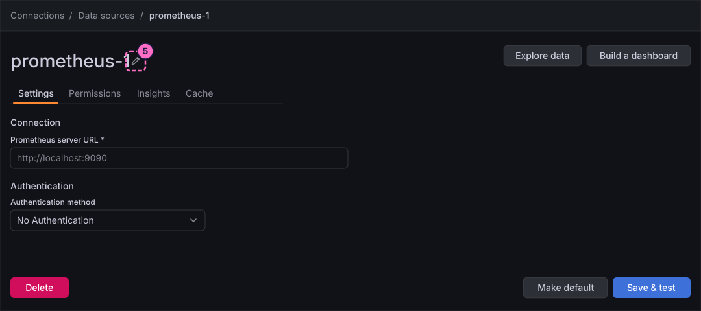
-
Under Connection, type the address of the Prometheus container in Prometheus server URL:
http://prometheus:9090 -
Leave Authentication method at No Authentication and click Save & test at the bottom of the page.
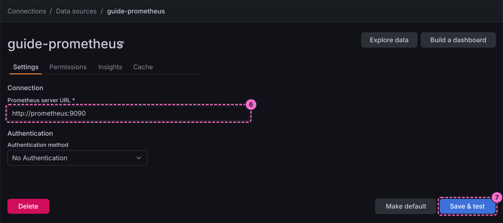
-
A green alert reads Successfully queried the Prometheus API. The data source is ready. Do not click Make default: the provisioned Prometheus stays the default.
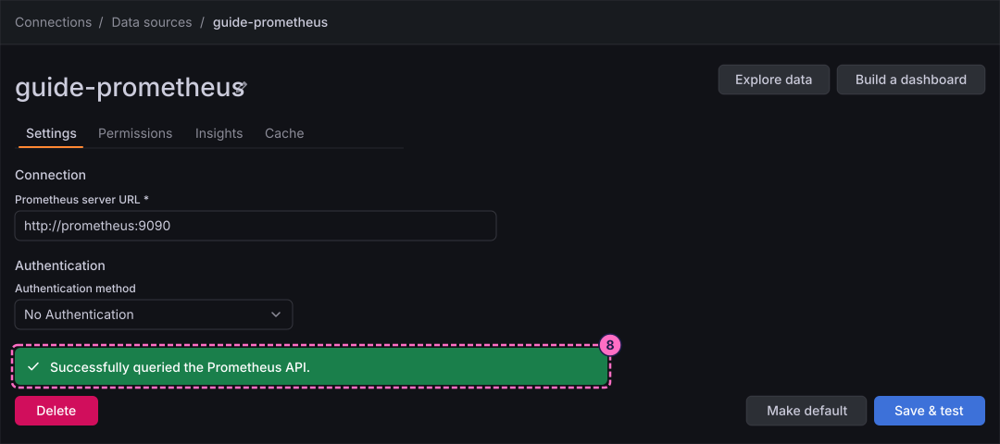
Add Loki and Tempo
-
Open Connections → Data sources, click Add new data source, and click the card Loki.
-
Click the pencil next to the title and rename the data source to
guide-loki. -
Under Connection, type the address of the Loki container in URL:
http://loki:3100 -
Click Save & test. The message Data source successfully connected. appears, followed by a hint to build a dashboard or to open Explore.
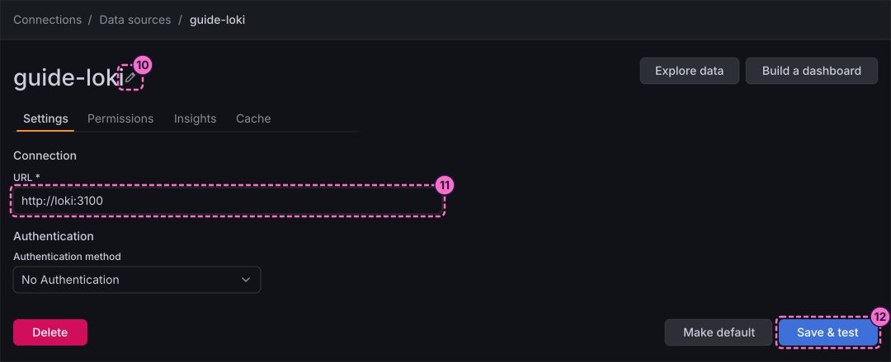
-
Open Connections → Data sources, click Add new data source, and click the card Tempo.
-
Click the pencil next to the title and rename the data source to
guide-tempo. -
Under Connection, type the address of the Tempo container in URL:
http://tempo:3200 -
Click Save & test. The message Data source is working appears.
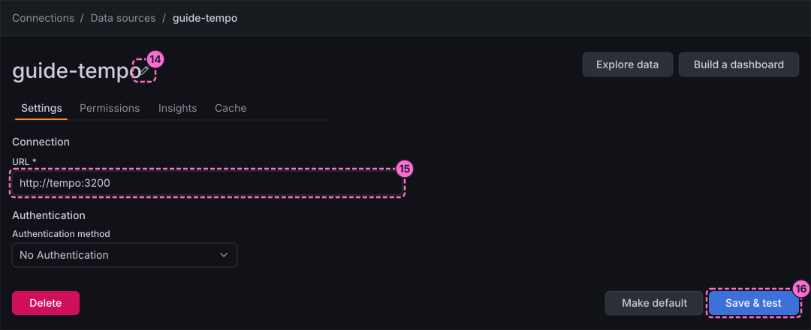
Add PostgreSQL
-
Open Connections → Data sources, click Add new data source, and type
postgresin the box Filter by name or type. -
Click the card PostgreSQL.
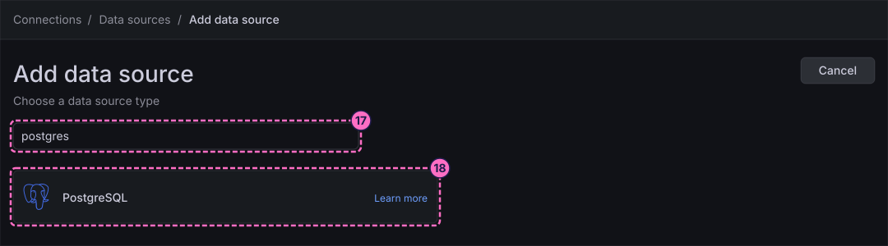
-
Click the pencil next to the title and rename the data source to
guide-postgres. -
Under Connection, type the address of the database container in Host URL:
postgres:5432 -
In Database name, type
bookshelf. -
Under Authentication, type
bookshelfin Username. -
In Password, type
changeme. This is the demo password of the lab database, never a value for a real system. -
Set TLS/SSL Mode to
disable, because the lab database does not use TLS. -
Click Save & test. The message Database Connection OK appears.
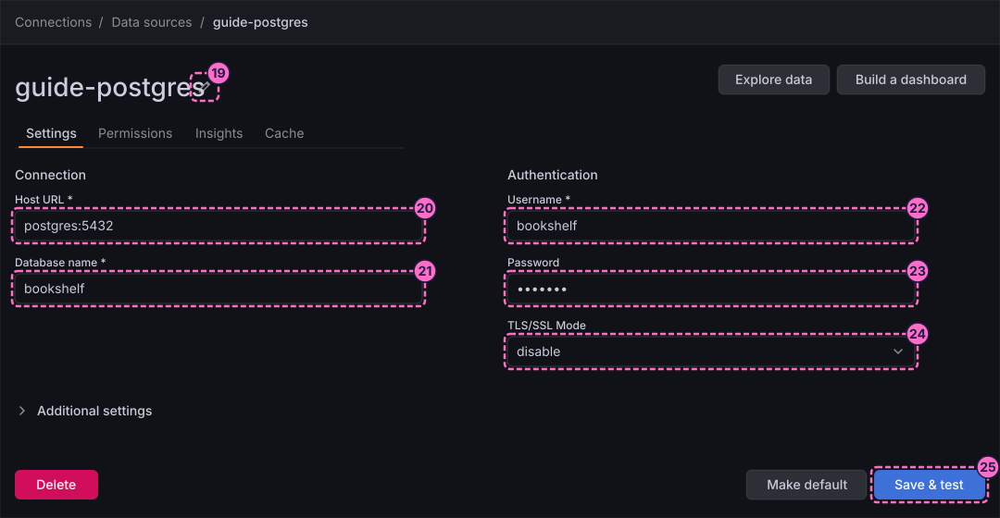
Add TestData
-
Open Connections → Data sources, click Add new data source, type
testdatain the filter box, and click the card TestData. -
Click the pencil next to the title and rename the data source to
guide-testdata. -
Click Save & test. The data source has no required fields, and the message Data source is working appears.
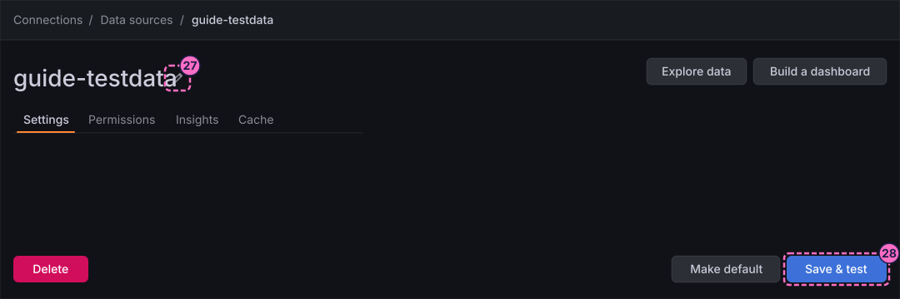
Link Loki to Tempo
The Bookshelf service writes the trace identifier into every log line as trace_id. A derived field turns that value into a link that opens the trace in Tempo.
-
Open Connections → Data sources and click guide-loki.
-
Scroll to Additional settings, open Derived fields and click Add.
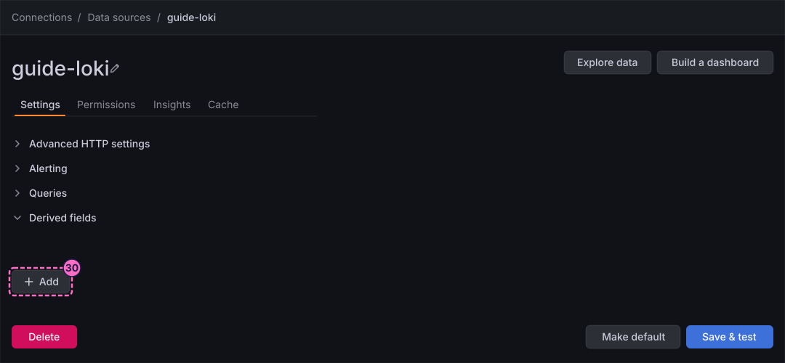
-
In the new row, give the derived field the name
trace_id. -
Type the regular expression that captures the identifier from the log line:
"trace_id":\s*"(\w+)" -
Type the query that the link sends to Tempo; it is the captured value:
${__value.raw} -
Turn on the internal link of the row and choose guide-tempo as its data source.
-
Give the link the label
Trace. -
Click Save & test. The message of step 12 appears again.
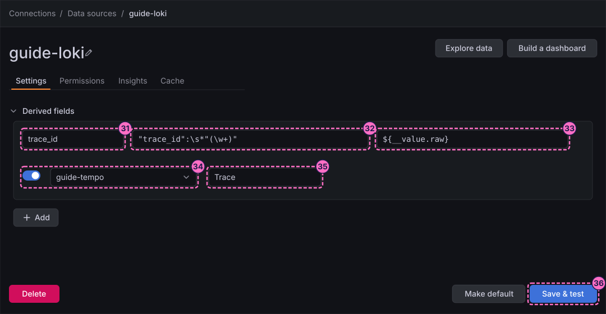
The figure draws the five values of the row in the order of the steps and leaves out the field labels, because the exact wording of these labels was not checked in the lab. Match each value to its field by its meaning: the name, the regular expression, the query, the internal link with its data source, and the link label.
Check the result
Open Connections → Data sources. The list must show the five new data sources guide-loki, guide-postgres, guide-prometheus, guide-tempo and guide-testdata above the four provisioned ones, and each one must have answered Save & test with its success message.
To see data flow through a new data source, open Explore, choose guide-prometheus in the data source picker and run the query up with the blue Run query button. Generate some traffic first and restore it afterwards:
curl -X POST localhost:8090/mode/failingcurl -X POST localhost:8090/mode/normalVariations
-
Add the same data sources from files instead: the lab provisions its own with the file
grafana/provisioning/datasources/datasources.yaml, which the reference page Data sources explains. -
The settings page of guide-prometheus has more options under Advanced settings, for example Scrape interval and Query timeout. The defaults are fine for these guides.
What can go wrong
| Symptom | Cause | Fix |
|---|---|---|
Save & test reports a connection error for Prometheus, Loki or Tempo |
The URL uses |
Use the container host names of the steps ( |
PostgreSQL answers with an authentication or connection error |
A typing mistake in Host URL, Username or Password, or the database container is not running. |
Check the values of steps 20 to 24 and run |
The data source has the name |
The pencil step was skipped, and 13.3 gives a placeholder name at creation. |
Click the pencil next to the title, enter the |
The derived field shows a link but the trace does not open |
The data source of the internal link is not guide-tempo, or the query is not the captured value. |
Open the derived field again, check the data source and the query of steps 33 and 34, and save. |
The provisioned data sources cannot be edited |
The lab provisions them from files, which makes them read-only. |
Edit your own |
Clean up
Keep the data sources: the following guides query them. To delete one, open it from Connections → Data sources and click Delete at the bottom of its settings page. Stopping the profile with docker compose --profile grafana down -v also removes everything the lab stores, including these data sources.
Where to go next
-
Previous guide: First steps in Grafana.
-
Next guide: Explore metrics, which queries Prometheus in Explore.
-
Reference: Data sources describes every data source type, its settings and provisioning.